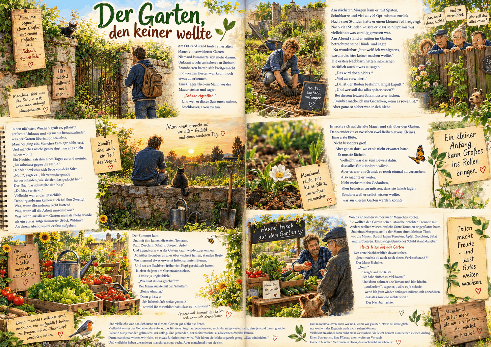

Best AI Website MakerEine Gedankenreise zum Verschenken

🌱 Der Garten, den keiner wollte
Am Ortsrand stand hinter einer alten Mauer ein verwilderter Garten.
Niemand kümmerte sich mehr darum.
Unkraut wuchs zwischen den Steinen,
Brombeeren hatten sich breitgemacht und von den Beeten war kaum noch etwas zu erkennen.
Eines Tages blieb ein Mann vor der Mauer stehen und sagte:
„Schade eigentlich“
Und weil er diesen Satz ernst meinte, beschloss er, etwas zu tun.
Am nächsten Morgen kam er mit Spaten,
Schubkarre und viel zu viel Optimismus zurück.
Nach zwei Stunden hatte er einen kleinen Teil freigelegt.
Nach vier Stunden wusste er,
dass sein Optimismus vielleicht etwas voreilig gewesen war.
Am Abend stand er mitten im Garten, betrachtete seine Hände und sagte:
„Na wunderbar.
Jetzt weiß ich wenigstens,
warum das hier keiner machen wollte.“
Die ersten Nachbarn hatten inzwischen natürlich auch etwas zu sagen.
„Das wird doch nichts“
„Viel zu verwildert“
„Da ist der Boden bestimmt längst kaputt“
„Und wer soll das alles später essen?“
Bei diesem letzten Satz musste er lachen.
„Darüber mache ich mir Gedanken, wenn es soweit ist"
Aber ganz so sicher war er sich nicht.
In den nächsten Wochen grub er,
pflanzte, entfernte Unkraut
und versuchte herauszufinden,
was der Garten überhaupt brauchte.
Manches ging ein.
Manches kam gar nicht erst.
Und manches wuchs genau dort,
wo er es nicht haben wollte.
Ein Nachbar sah ihm eines Tages zu und meinte:
„Du arbeitest gegen die Natur“
Der Mann wischte sich Erde von der Stirn.
„Nein“,sagte er.
„Ich versuche gerade herauszufinden, wie sie sich das gedacht hat"
Der Nachbar schüttelte den Kopf.
„Du bist verrückt“
Vielleicht war er das tatsächlich.
Denn irgendwann kamen auch bei ihm Zweifel.
Was, wenn die anderen recht hatten?
Was, wenn all die Arbeit umsonst war?
Was,
wenn aus diesem Garten niemals mehr wurde
als ein etwas aufgeräumteres Stück Wildnis?
An einem Abend wollte er fast aufgeben.
Er setzte sich auf die alte Mauer und sah über den Garten.
Dann entdeckte er zwischen zwei Reihen etwas Kleines.
Eine erste Blüte.
Nicht besonders groß.
Aber genau dort, wo er sie nicht erwartet hatte.
Er musste lächeln.
Vielleicht war das kein Beweis dafür, dass alles funktionieren würde.
Aber es war ein Grund, es noch einmal zu versuchen.
Also machte er weiter.
Nicht mehr mit dem Gedanken,
allen beweisen zu müssen, dass sie falsch lagen.
Sondern weil er selbst wissen wollte,
was aus diesem Garten werden konnte.
Der Sommer kam.
Und mit ihm kamen die ersten Tomaten.
Dann Zucchini.
Salat.
Erdbeeren.
Äpfel.
Und irgendwann war der Garten kaum wiederzuerkennen.
Wo früher Brombeeren alles überwuchert hatten, standen Beete.
Wo niemand etwas erwartet hatte, summten Bienen.
Und wo die Nachbarn früher den Kopf geschüttelt hatten,
blieben sie jetzt am Gartenzaun stehen.
„Das ist ja unglaublich“
„Wie hast du das geschafft?“
Der Mann zuckte mit den Schultern.
„Keine Ahnung“
Dann grinste er.
„Ich habe einfach weitergemacht,
obwohl ihr mir erklärt habt, dass es nichts wird“
Von da an kamen immer mehr Menschen vorbei.
Sie wollten den Garten sehen.
Manche brachten Freunde mit.
Andere wollten wissen, welche Sorte Tomaten er gepflanzt hatte.
Und eines Morgens stellte der Mann einen kleinen Tisch vor die Mauer.
Darauf lagen Tomaten, Äpfel, Zucchini, Salat und Erdbeeren.
Ein handgeschriebenes Schild stand daneben:
Heute frisch aus dem Garten
Der erste Nachbar blieb davor stehen.
„Jetzt machst du auch noch einen Verkaufsstand?“
Der Mann lächelte.
„Nein“
Er zeigte auf die Kiste.
„Ich habe einfach zu viel davon.“
Und dann nahm er eine Tomate und biss hinein.
„Außerdem“, sagte er,
„wäre es ja schade,
wenn ich jetzt wieder anfangen müsste, mir anzuhören,
dass das sowieso nichts wird“
Der Nachbar lachte.
Und vielleicht war das Schönste an diesem Garten gar nicht die Ernte.
Vielleicht war es der Gedanke,
dass etwas,
das für viele längst aufgegeben war,
nicht darauf gewartet hatte,
dass jemand daran glaubte.
Es hatte nur jemanden gebraucht, der anfing.
Und jemanden, der weitermachte, als die ersten Zweifel kamen.
Denn manchmal wissen wir nicht, ob etwas funktionieren wird.
Wir hören vielleicht sogar oft genug:
„Das wird nichts“
Und vielleicht haben die anderen manchmal sogar recht.
Aber manchmal irren sie sich.
Und manchmal irren auch wir uns,
wenn wir glauben, etwas sei unmöglich,
nur weil wir das Ergebnis noch nicht sehen können.
Vielleicht braucht es dann nicht mehr Gewissheit.
Vielleicht braucht es nur einen kleinen Anfang.
Einen Spatenstich.
Eine Pflanze.
Einen weiteren Versuch.
Und ein bisschen Vertrauen in etwas, das noch nicht zu sehen ist.
🌿 Gedankenreisen – Geschichten
https://www.youtube.com/@Gedankenreisen-Geschichten
Manchmal sehen wir nur das, was gerade noch nicht funktioniert.
Wir sehen das Unkraut, die Rückschläge, die Zweifel und all die Gründe, warum etwas vielleicht nicht gelingen könnte.
Doch vielleicht muss am Anfang noch gar nicht sichtbar sein, was daraus einmal werden kann.
Manchmal braucht es nur jemanden, der anfängt.
Einen ersten Spatenstich.
Eine kleine Pflanze.
Einen weiteren Versuch.
Und die Bereitschaft, weiterzumachen, auch wenn andere längst den Kopf schütteln.
Denn nicht alles, was zunächst nach Wildnis aussieht, ist verloren.
Manches wartet einfach darauf, dass jemand ihm eine Chance gibt. 🌱
Diese Gedankenreise entstand aus einem einfachen Gedanken:
Was wäre, wenn wir etwas nicht deshalb aufgeben, weil es unmöglich ist – sondern nur, weil wir das Ergebnis noch nicht sehen können?
So entstand der Garten, den keiner wollte.
Ein Ort, den alle längst abgeschrieben hatten.
Ein Mann, der selbst nicht wusste, ob sein Versuch gelingen würde.
Und viele kleine Momente zwischen Zweifel und Hoffnung.
Dabei wurde immer deutlicher:
Der Garten musste nicht perfekt werden.
Eigentlich ging es gar nicht um den Garten.
Es ging um den Mut, anzufangen, um das Vertrauen in kleine Schritte und darum, sich von einem „Das wird nichts“ nicht automatisch davon abhalten zu lassen, es selbst herauszufinden.
Und vielleicht kennen wir alle irgendwo in unserem Leben so einen kleinen, verwilderten Garten. 🌿
Vielleicht gibt es auch in Deinem Leben etwas, bei dem Du gerade denkst:
„Das wird wahrscheinlich nichts.“
Dann musst Du heute noch nicht wissen, wie alles enden wird.
Vielleicht reicht ein kleiner Anfang.
Ein Gespräch.
Ein erster Schritt.
Eine Idee.
Ein Versuch.
Und wenn etwas nicht funktioniert, bedeutet das nicht automatisch, dass alles vergeblich war.
Manchmal zeigt uns erst der Weg, was daraus werden kann.
Also lass Dich nicht zu schnell davon überzeugen, dass etwas unmöglich ist.
Vielleicht braucht es einfach noch Zeit.
Vielleicht braucht es einen anderen Weg.
Oder vielleicht braucht es nur jemanden, der sagt:
„Ich probiere es trotzdem.“ 🌱
Best AI Website Maker